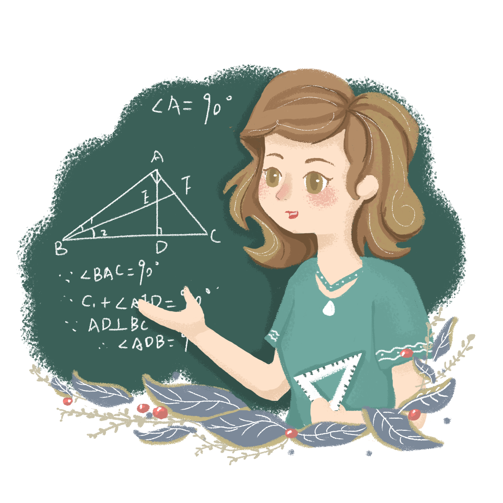

Mathématique
Les mathématiques (ou la mathématique) sont un ensemble de connaissances abstraites résultant de raisonnements logiques appliqués à des objets divers tels que les ensembles mathématiques, les nombres, les formes, les structures, les transformations.

L'informatique
L'informatique est un domaine d'activité scientifique, technique, et industriel concernant le traitement automatique de l'information par l'exécution de programmes informatiques par des machines : des systèmes embarqués, des ordinateurs, des robots, des automates... x